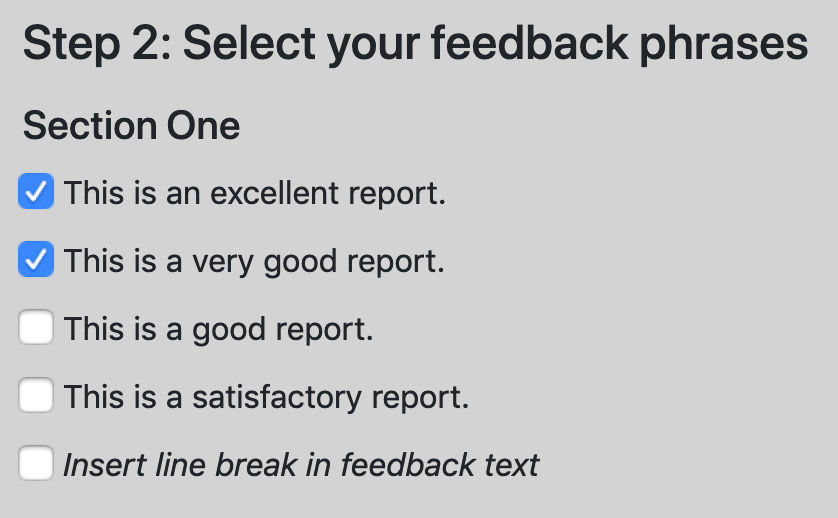

Jotter Notarum: Feedback Generator - Instructions
Using the system
Below are the instructions for using Jotter Notarum, the student feedback generator.
Step 1: Select your feedback comments file
You need to select a .txt file to load into Jotter Notarum. This file should contain your commonly used comments. Hit "Browse" to select a file.

Your feedback .txt file must be formatted in a specific way. Section headings must start with a #. The end of a section is denoted by a new line containing a *. Blank lines will be ignored. Ensure each line of feedback ends with a fullstop. To help you, a sample feedback file has been provided.

Step 2: Select your feedback phrases
Select all the required pieces of feedback you wish to use for a particular student. You also have the option to split the feedback into paragraphs by checking the relevant "Insert line break in feedback text" checkboxes.
To add a new comment to a section, choose "+ Add a comment to this section", type the comment and press "Add". The comment is added to the end of that section and saved to your feedback file. In Chrome and Edge your browser will ask permission to edit the file the first time, and the file is updated automatically. In other browsers, press the "Save updated file" button that appears and replace your old feedback file with the downloaded one.

Step 3: Generate feedback text
To generate the paragraph(s) of selected feedback, press the "Generate Feedback" button. The text content of the selected checkboxes will appear in the text area below the button.

Step 4: Copy feedback and clear page
Click the "Copy Feedback" button to copy the contents of the text area to your clipboard. You will now be able to paste the feedback into My Learning Space.
Once you have copied the feedback for a student, click "Clear Page" to reset the checkboxes and text area. You can now move on to selecting feedback for a different student.

Advanced page: export to Word
The Advanced page works like the main page, with an extra Step 5 once feedback has been generated. Type a student's name, or load a class list (a .txt file with one name per line) and pick from it. You can then save the feedback as a Word file for that student, or add it to one combined Word file, with each student starting on a new page. In Chrome and Edge the combined file is updated in place. In other browsers it is downloaded again each time you add a student. Nothing is uploaded; see Privacy.
Questions about privacy, or about who made Jotter Notarum? See the Privacy and About pages.